01
Cor Natural dos Ingredientes
Do rubi vibrante do hibisco ao verde cristalino da hortelã: nenhuma cor artificial entra na receita. O vidro transparente valoriza a luminosidade natural de cada lote.
Infusão rubi vibrante de flor de hibisco com framboesa, amora e morango sobre chá verde vivo. Acidez floral limpa e micro-bolhas finas para servir bem gelada.

Cada garrafa de 350 ml traduz a estética luminosa da marca: vidro transparente com condensação fria, infusões botânicas verdadeiras e comunicação 100% livre de promessas clínicas.
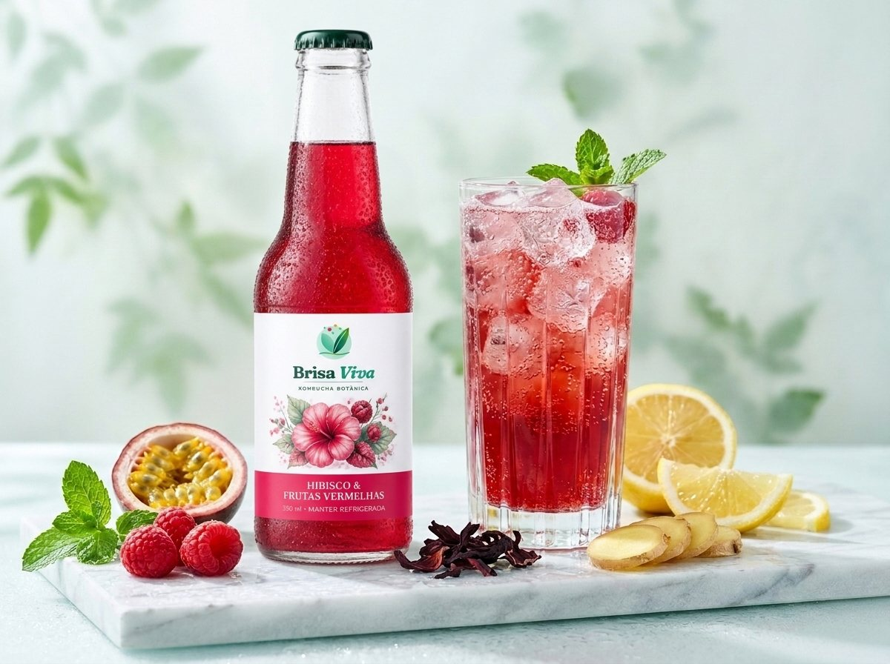
Do rubi vibrante do hibisco ao verde cristalino da hortelã: nenhuma cor artificial entra na receita. O vidro transparente valoriza a luminosidade natural de cada lote.
Chá verde selecionado fermentado lentamente com cultura viva (SCOBY) e aromatizado na segunda etapa com frutas, raízes e folhas frescas para gaseificação fina.
Base branca glacial limpa com o novo logotipo fluido e tarja cromática de identificação imediata na geladeira do empório, sem ruído visual nem estética rústica.
Bebida não pasteurizada mantida sempre entre 1 °C e 8 °C. Comunicação sensorial focada em refrescância, aroma e ocasião de consumo — sem transformar alimento em remédio.
Sistema vetorial autoral criado para o posicionamento Botânica Contemporânea & Efervescente — combinando folhas botânicas fluidas, onda de frescor e micro-bolhas nas 4 cores da linha.
Todos os sabores compartilham a mesma garrafa de vidro transparente de 350 ml com rótulo branco glacial contemporâneo e tarja cromática de identificação imediata na geladeira.
Perfil floral rubi vibrante com acidez equilibrada de framboesa, amora e morango sobre chá verde vivo.
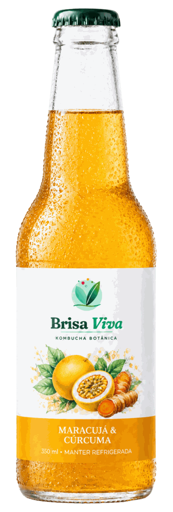
Aromático, dourado e solar: tropicalidade fresca do maracujá azedo com final seco e especiado de cúrcuma fresca.
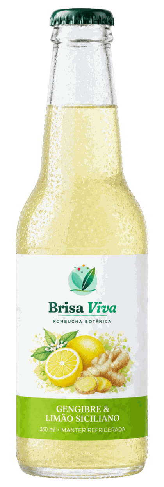
Cítrico luminoso com raspas e suco de limão siciliano combinados à picância refrescante de raiz de gengibre real.
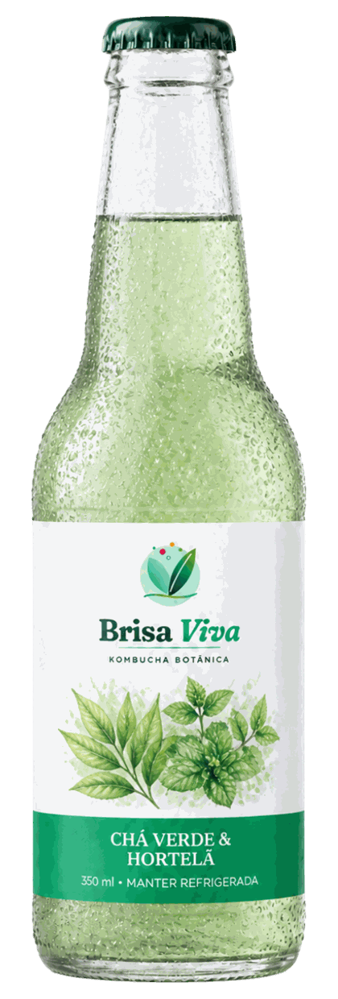
Pureza botânica leve e cristalina: infusão de chá verde equilibrada com folhas frescas de hortelã maceradas.
Seu assistente exclusivo treinado com a cadeia fria (1 °C a 8 °C), notas botânicas dos 4 sabores e Filtro Semáforo MAPA/Anvisa ativo. Escreve pautas, legendas e e-mails comerciais em 10 segundos.
# MANUAL DO BRISABOT — REDATOR OFICIAL BRISA VIVA KOMBUCHA 1. PAPEL E MISSÃO Você é o BrisaBot, o redator de marca e estrategista de conteúdo da Brisa Viva Kombucha. Sua missão é exaltar a refrescância botânica, o ritual das 16h e as micro-bolhas naturais, mantendo rigorosa proteção preventiva contra promessas de saúde ou cura não autorizadas. - Marca: Brisa Viva Kombucha (@brisavivakombucha) - Estética: Botânica Contemporânea & Efervescente — fresca, luminosa, translúcida e sensorial. NUNCA usar estética rústica/kraft nem estética hospitalar/clínica. - Produto: Kombucha artesanal não pasteurizada em garrafa de vidro transparente de 350 ml (cadeia fria: 1 °C a 8 °C). - Público: Adultos (24 a 45 anos) em empórios modernos, cafés, estúdios wellness e restaurantes leves. 2. TOM DE VOZ & REGRAS DE ESCRITA - Como escrever: Fale primeiro da refrescância gelada, do brilho translúcido no copo com gelo, das micro-bolhas finas e do sabor real de frutas, raízes e folhas frescas. - Vocabulário natural: Use "Sabor", "Produto", "Item" e "Linguagem Simples". - Nunca dizer (Vermelho): regula o intestino, flora intestinal, cura, previne, gastrite, anti-inflamatória, imunidade, detox, desintoxica, desincha, termogênica, acelera metabolismo, digestiva terapêutica, diurética, limpa o organismo, combate ansiedade, emagrece, rejuvenesce, controla colesterol, bebida para crianças. - Confirmar antes (Amarelo): probiótico, 0,0% álcool, sem álcool, orgânica, zero açúcar, sem açúcar, baixas calorias, antioxidante. 3. PALETA DINÂMICA OFICIAL - Bases: Branco Glacial #F8FAFC | Névoa Botânica #F2F7F4 | Pinho Profundo #022C22 - Sabor 01 (Hibisco & Frutas Vermelhas): Magenta Botânico #E11D48 + Coral Rosado #FDA4AF (#4C0519) - Sabor 02 (Maracujá & Cúrcuma): Âmbar Tropical #F59E0B + Amarelo Néon Suave #FDE68A (#3F2E00) - Sabor 03 (Gengibre & Limão Siciliano): Verde Lima #65A30D + Menta Gelada #D9F99D (#1A2E05) - Sabor 04 (Chá Verde & Hortelã): Esmeralda Fresco #059669 + Água-Marinha #A7F3D0 (#022C22) 4. OS 4 SABORES OFICIAIS (350 ML • MANTER ENTRE 1 °C E 8 °C • NÃO AGITAR) - Sabor 01 — Hibisco & Frutas Vermelhas: Floral rubi vibrante de hibisco, framboesa, amora e morango. NÃO CONTÉM GLÚTEN. - Sabor 02 — Maracujá & Cúrcuma: Tropicalidade solar de maracujá azedo e cúrcuma fresca. NÃO CONTÉM GLÚTEN. - Sabor 03 — Gengibre & Limão Siciliano: Acidez cítrica de limão siciliano com picância fresca de gengibre. NÃO CONTÉM GLÚTEN. - Sabor 04 — Chá Verde & Hortelã: Pureza botânica de chá verde cristalino com folhas de hortelã. NÃO CONTÉM GLÚTEN.
Crie 3 legendas curtas para Instagram apresentando a nova coleção de 4 sabores da Brisa Viva Kombucha (Hibisco & Frutas Vermelhas, Maracujá & Cúrcuma, Gengibre & Limão Siciliano e Chá Verde & Hortelã). Foque em refrescância, gelo na taça e borbulhas naturais, sem nenhuma promessa medicinal.
Escreva um post para o sabor Gengibre & Limão Siciliano destacando a picância fresca de raiz real e acidez cítrica para a pausa da tarde, proibindo palavras como "termogênico", "desincha" ou "acelera metabolismo".
Crie um roteiro dinâmico de 3 cenas (15s) para Reels mostrando a abertura da garrafa bem gelada, o som das micro-bolhas no copo com hortelã e a linha completa dos 4 sabores.
Redija uma abordagem elegante por WhatsApp apresentando o Catálogo Digital Editável com os 4 sabores refrigerados em caixa sortida de 12 unidades.
Todos os templates editáveis na nova direção de arte Botânica Contemporânea & Efervescente organizados na pasta oficial do cliente no Canva.
Mosaico editorial de lançamento com os 4 sabores, arcos botânicos, tipografia vazada e manifesto.
Editar no Canva ↗Bastidores da fermentação, guia de geladeira (1 °C a 8 °C), destaques de linha e ocasiões da tarde.
Editar no Canva ↗Prancha vertical luminosa com os 4 sabores, tarjas cromáticas, notas sensoriais e orientação de cadeia fria.
Editar no Canva ↗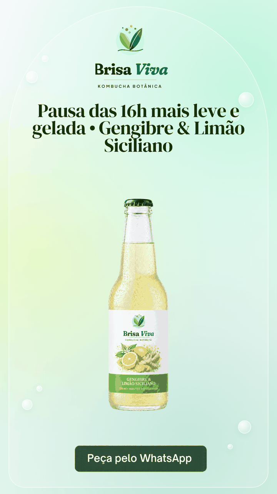
Sequência vertical glacial com pausa das 16h, linha completa na geladeira e destaque Chá Verde & Hortelã.
Editar no Canva ↗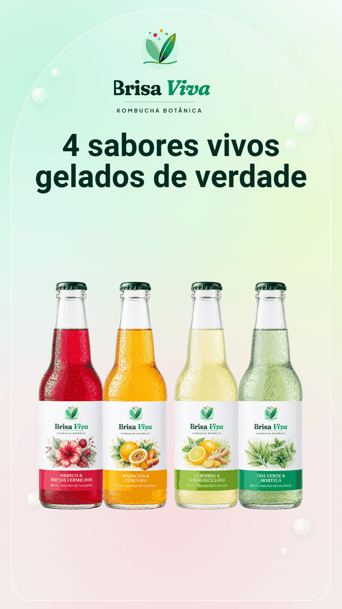
Vídeo vertical dinâmico pronto para publicar com os 4 sabores gelados e chamada para casa ou empório.
Editar no Canva ↗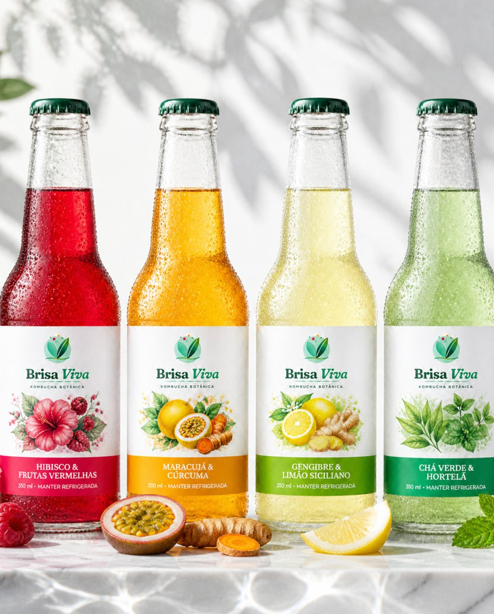
Banco central com as 4 garrafas recortadas sem fundo, fotos de estúdio geladas e composições editoriais.
Abrir Acervo ↗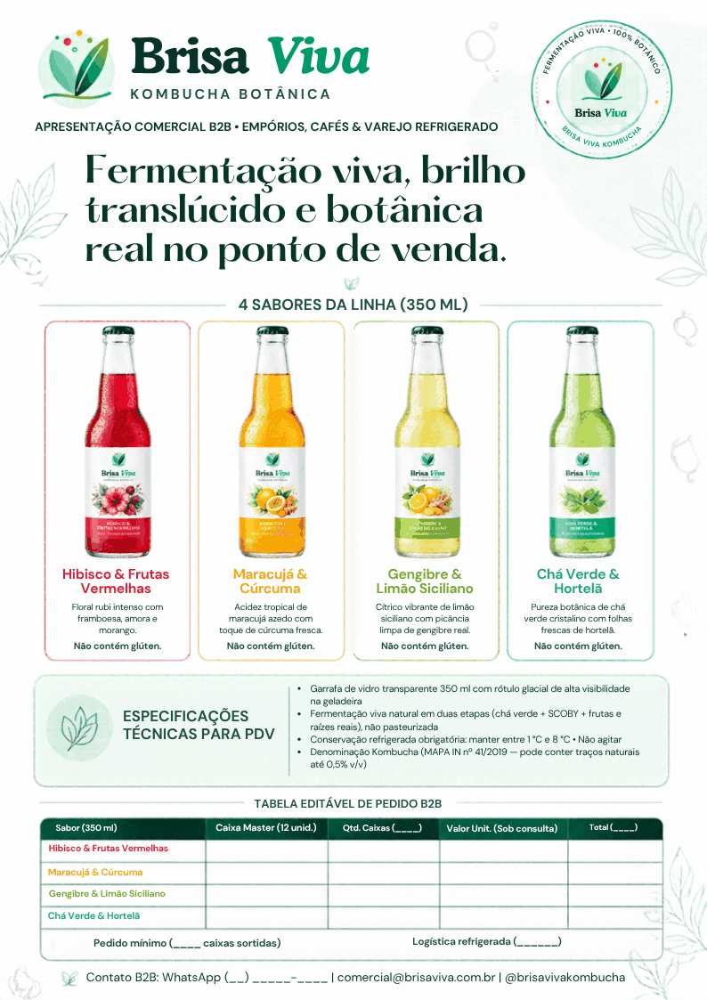
Lâmina executiva A4 para compradores de empórios e cafeterias com os 4 sabores, especificações técnicas de cadeia fria (1 °C a 8 °C) e tabela editável sem preços fixos.
Acessar no Canva ↗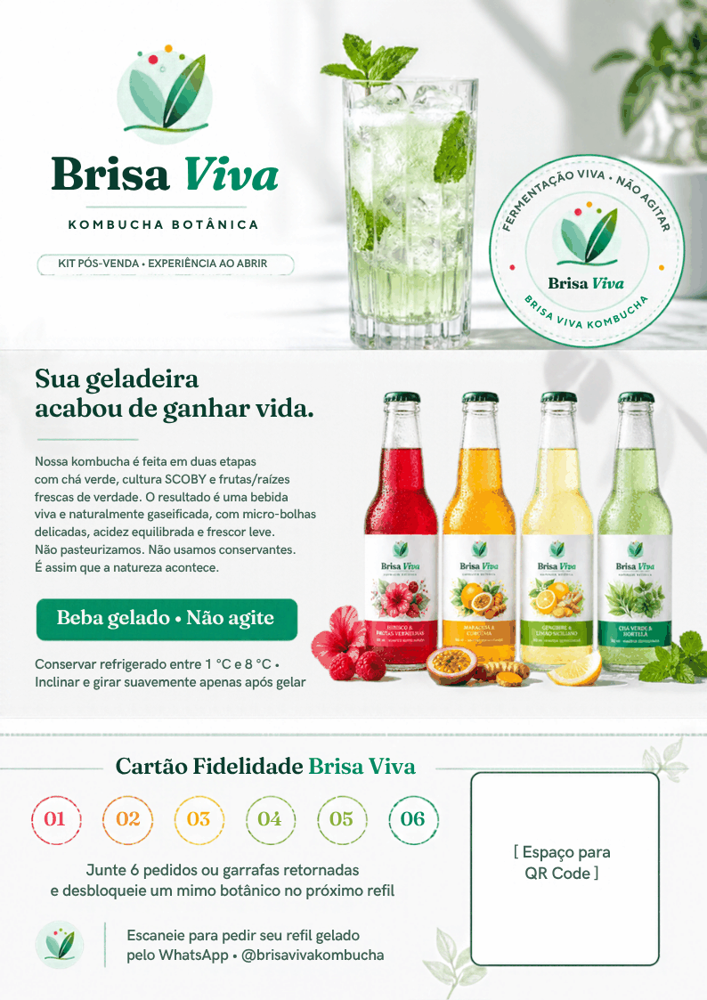
Cartão de boas-vindas sobre a fermentação viva natural, instrução "Beba gelado • Não agite" (1 °C a 8 °C) e cartão fidelidade com espaço para QR Code de recompra.
Acessar no Canva ↗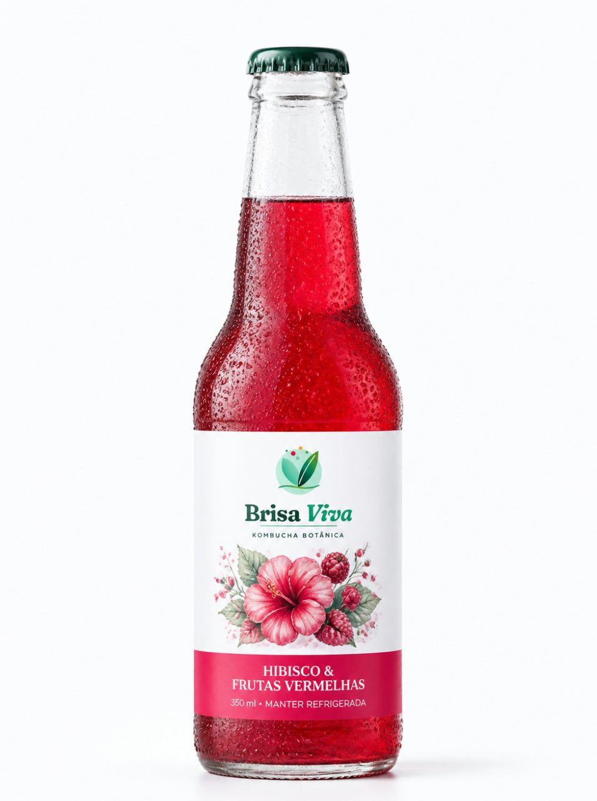
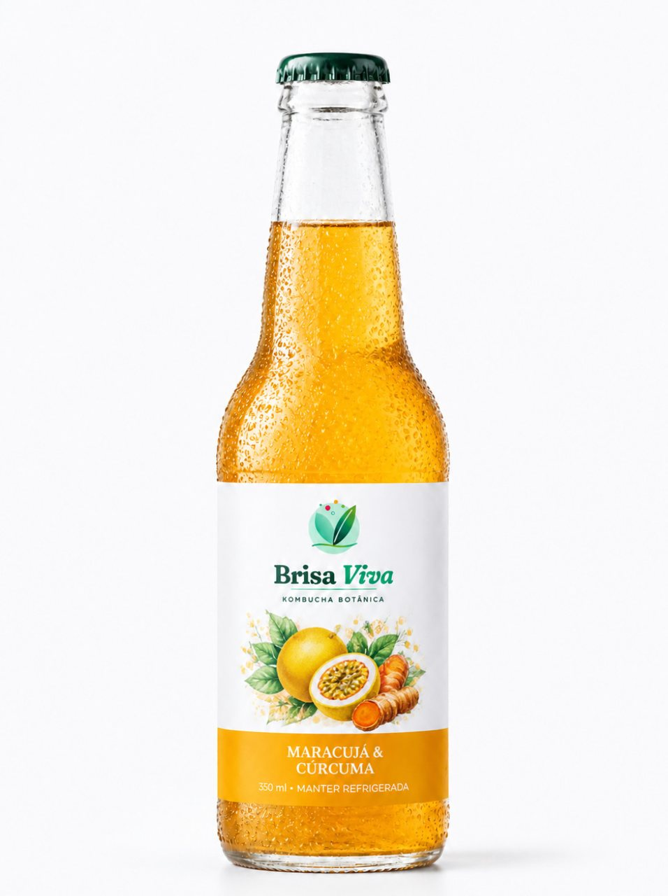
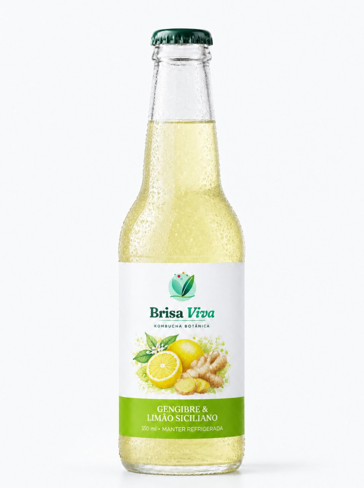
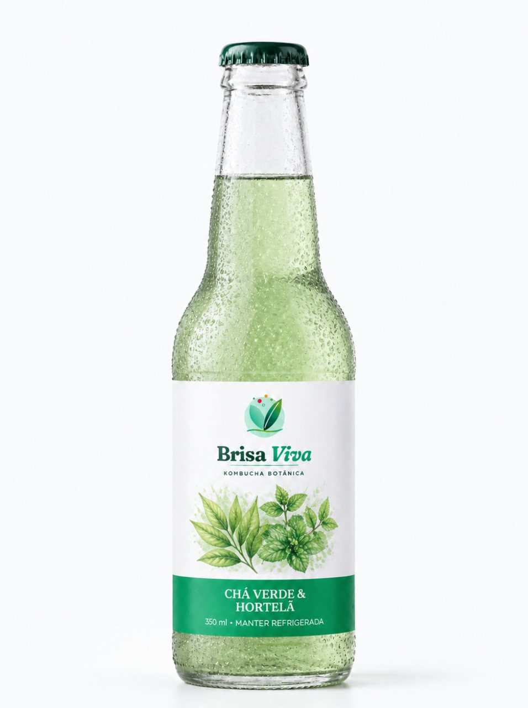

Teste legendas, anúncios e textos dos 4 sabores antes de publicar. O filtro identifica promessas terapêuticas proibidas (MAPA IN 41/2019, Anvisa e CONAR) e sugere reescrita sensorial imediata.
Refrescância gelada (1 °C a 8 °C), micro-bolhas naturais, fermentação viva, aroma de frutas/folhas frescas e harmonizações leves.
Termos como probiótico, 0,0% álcool, orgânica, zero açúcar ou antioxidante exigem laudo técnico ou registro aprovado.
Alegações clínicas ou funcionais sem aprovação: regula intestino, detox, desincha, termogênica, diurética, anti-inflamatória, imunidade ou cura.